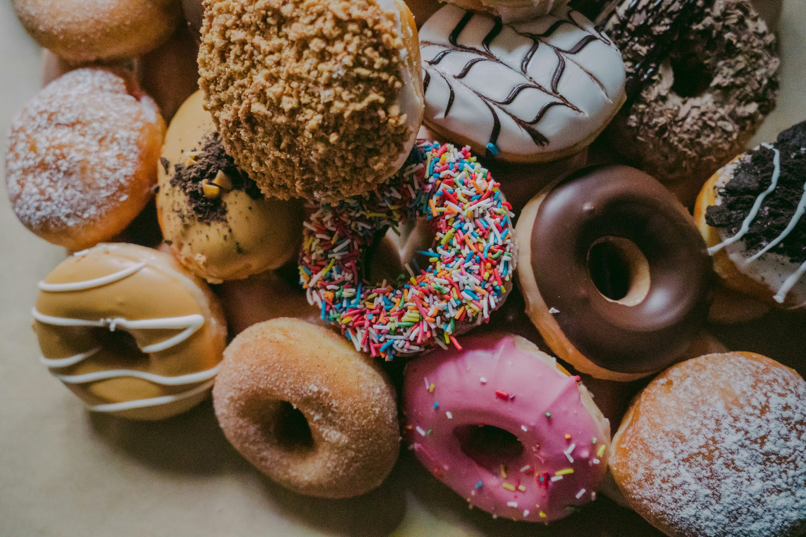

Donut Muffins Recipes

Description
Please note the differences in ingredient amounts when using the magazine
version of this recipe.
Ingredients
- ½ cup white sugar
- 1 teaspoon baking powder
- ¼ cup margarine, melted
- ¾ teaspoon ground nutmeg
- ½ cup milk
- 1 cup all-purpose flour
Steps
-
Preheat the oven to 375 degrees F (190 degrees C). Grease a 24-cup mini
muffin tin.
-
Make the muffins: Mix sugar, margarine, and nutmeg together in a large
bowl. Stir in milk, then mix in flour and baking powder until just
combined. Spoon batter into the prepared muffin cups, filling each 1/2
full.
-
Bake in the preheated oven until the tops are light golden brown, 15 to
20 minutes. Remove from the oven and transfer to a wire rack.
-
Immediately place melted margarine in a bowl, and mix sugar and cinnamon
together in another bowl.
-
Dip the top of each warm muffin in melted margarine, then dip in sugar
mixture to coat. Let cool for 10 minutes before serving.
Back to Home